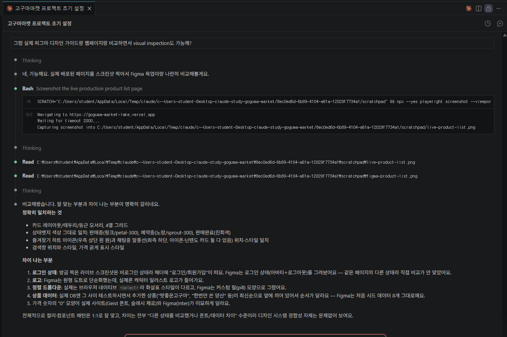

개발 환경 세팅
- VS Code를 설치하고, 확장 프로그램으로 Claude Code를 설치했다.
- 터미널에서도 쓸 수 있도록 Claude Code CLI를 추가로 설치했다 (winget 명령어 한 줄로 설치 가능).
- GitHub에 가입하고 Git을 설치했다.
- Node.js를 설치하고 터미널에서 사용할 수 있도록 설정했다.
💡 확장 프로그램과 CLI를 둘 다 설치해두면, VS Code 안에서도 터미널에서도 자유롭게 클로드 코드를 쓸 수 있다.
📌 Git은 파일 변경 이력을 기록하는 버전 관리 프로그램(내 컴퓨터에서 동작). GitHub는 그 Git 기록을 온라인에 올려서 백업하고 다른 사람과 공유할 수 있게 해주는 웹 서비스. 즉 Git이 도구라면 GitHub는 그 도구로 만든 걸 올려두는 저장소 사이트다.
AI로 게임 만들기
- Google AI Studio를 이용해서 간단한 게임 「붕어빵 타이쿤」을 만들어봤다.
💡 프롬프트만으로도 짧은 시간 안에 동작하는 프로토타입을 만들어볼 수 있었다.
웹페이지 제작 & GitHub 배포
- 코드를 짜기 전에 md(마크다운) 파일로 먼저 플래닝하는 법을 배웠다.
- 완성한 웹페이지를 GitHub에 배포하는 방법을 익혔다.
- git 초기화(
git init)를 먼저 하고, 그 다음에 배포해야 한다는 순서를 배웠다. - 새 프로젝트를 시작할 땐 GitHub에 저장소(repository)를 새로 만들어야 한다는 것도 배웠다.
💡 바로 코드를 짜기보다 마크다운으로 계획을 먼저 정리하니 작업 방향이 훨씬 명확해졌다.
📌 커밋(commit)은 내 컴퓨터 안에서 변경 내용을 기록으로 남기는 것(스냅샷 저장). 배포(deploy)는 그 코드를 실제로 사람들이 접속할 수 있는 서버(GitHub Pages, Vercel 등)에 올려서 웹사이트로 동작하게 만드는 것. 즉 커밋을 여러 번 쌓다가, 준비되면 배포로 세상에 공개하는 흐름이다.
🗂️ 저장소는 두 가지 방법으로 만들 수 있다. ① 클로드 코드에게 그냥 말로 시키기 ("깃허브에 저장소 만들어줘") ② gh CLI 명령어로 직접 만들기 — 예: gh repo create 이름 --public --source=. --remote=origin --push (저장소 생성 + 연결 + 첫 push까지 한 번에 처리됨)
MCP 개념 & 가계부 앱
- 가계부 앱을 만들면서 MCP(Model Context Protocol) 개념을 배웠다.
- Supabase에 가입하고, 클로드 코드에서 Supabase를 연결했다.
- 가계부 데이터베이스를 연동해서 실제로 데이터를 저장하고 불러올 수 있게 만들었다.
- Supabase가 단순 클라우드 DB가 아니라, 이메일 인증을 통한 회원가입/로그인, 회원 정보 관리 같은 기능도 함께 제공한다는 걸 배웠다.
- 개발하면서 중간중간 결과물을 확인하려면 클로드 코드에게 "npm run dev 실행해줘"라고 하면 되고, 그러면
localhost:3000에서 바로 눈으로 확인할 수 있다.
💡 MCP를 이용하면 클로드 코드가 외부 서비스(DB 등)를 직접 다룰 수 있게 된다는 걸 체감했다.
🧩 Supabase가 제공하는 기능들 — DB 하나에 필요한 기능이 거의 다 묶여 있다.
- Database: 실제 PostgreSQL 데이터베이스. SQL을 그대로 쓸 수 있고, 테이블 간 관계(foreign key)도 설정 가능.
- Auth (인증): 이메일/비밀번호, 이메일 인증, 매직링크(비번 없이 로그인), 구글/깃허브 같은 소셜 로그인까지 지원.
- Storage: 이미지·파일 업로드/보관. 권한 설정(RLS)으로 "이 파일은 본인만 보기" 같은 것도 가능.
- Realtime: DB에 새 데이터가 추가/수정/삭제되면 화면이 새로고침 없이 실시간으로 반영되게 만들 수 있음.
- Edge Functions: 서버 코드를 따로 만들지 않고도, 간단한 백엔드 로직(예: 결제 처리, 알림 보내기)을 실행할 수 있는 기능.
- Row Level Security(RLS): "내 데이터는 나만 볼 수 있다" 같은 접근 권한을 DB 차원에서 걸어주는 보안 기능 — 가계부처럼 개인정보가 들어가는 앱에 특히 중요.
Vercel 배포
- Vercel CLI를 설치하고
vercel login으로 로그인했다. vercel명령어로 이 웹사이트를 실제로 배포해봤다.- 새 프로젝트를 만들 땐 ① git 초기화 → ② GitHub에 push → ③ GitHub와 Vercel 연결 순서로 하면, push할 때마다 자동 배포되는 구조를 처음부터 만들 수 있다는 것도 배웠다.
- GitHub Pages로 되는 배포와 Vercel이 필요한 배포가 따로 있다는 것도 정리했다.
💡 vercel --prod를 붙여야 프로덕션에 반영되고, 그냥 vercel만 실행하면 미리보기 배포라는 걸 배웠다.
📌 새 프로젝트의 추천 순서: ① git init으로 로컬 저장소 만들기 → ② GitHub에 저장소 만들고 push하기 → ③ Vercel에서 그 GitHub 저장소를 연결(Import/Connect)하기. GitHub 연결이 끝나면 Vercel이 알아서 첫 배포까지 자동으로 해준다 — 그 뒤로는 vercel 명령어를 따로 안 쳐도 push만 하면 계속 자동 배포됨. (참고: 이번 실습에선 순서가 조금 달라서, vercel CLI로 먼저 배포부터 해보고 나중에 git init → GitHub 연결을 따로 진행했다. 둘 다 결과적으론 동작하지만, 처음부터 위 순서대로 하는 게 더 깔끔하다.)
🔀 GitHub Pages vs Vercel, 언제 뭘 쓸까? GitHub Pages는 html/css/js로만 이뤄진 정적(static) 웹페이지만 올릴 수 있다 — 서버 없이 파일을 그대로 보여주는 방식이라, 오렌지아워·상하이여행 같은 순수 웹페이지는 GitHub Pages로 충분하다. 반면 가계부 앱은 Next.js라는 프레임워크로 만들어져서 "서버가 계속 켜진 채로 요청을 처리해주는" 구조(서버사이드 렌더링 등)가 필요하다 — npm run dev로 localhost:3000에서 돌아가던 게 바로 그 서버가 내 컴퓨터에서만 켜져 있던 상태였고, Vercel은 그 서버를 인터넷에 항상 켜둔 채로 대신 실행해주는 서비스다. 정리하면: 그냥 html/css/js 웹페이지 → GitHub Pages, Next.js/React처럼 서버 로직이 필요한 앱 → Vercel.
고구마마켓 (최종 프로젝트) 🚧
- 이번 교육에서 배운 내용을 전부 합쳐서 만드는 최종 산출물. CLAUDE.md, CRUD, 회원가입/로그인, 결제, 검증, 배포까지 다 들어간다.
- 아직 만드는 중이라 계속 업데이트할 예정.
- 토스페이먼츠로 결제 기능을 붙이는 중이다.
📌 CLAUDE.md는 /init 명령어로 만든다. 클로드 코드는 작업을 시작하기 전에 이 파일을 가장 먼저 참고하기 때문에, 여기에 프로젝트 규칙을 미리 적어두면 이후 작업이 훨씬 일관성 있게 진행된다. 적어둬야 할 것들:
- 어떤 MCP를 활용하는지 (예: Supabase MCP)
- 어디에 배포하는지 (예: Vercel)
- 디자인 가이드 (색상, 폰트, 톤앤매너 등)
- 활용하는 기술 스택 (예: Next.js, Supabase 등)
💳 토스페이먼츠 연동은 클로드 코드에게 토스페이먼츠 개발자 문서 URL을 그대로 던져주면, 그 문서를 직접 읽고 최신 연동 방식에 맞춰 결제 기능 코드를 짜준다. 라이브러리 이름이나 API 사용법을 일일이 설명 안 해줘도, "이 문서 참고해서 결제 기능 만들어줘"라고만 하면 된다.
스킬 설치하기
- 클로드 코드에 스킬(플러그인)을 설치해서 기능을 확장하는 법을 배웠다.
- 예시로 한국 전용 스킬 모음인 K-skill을 설치해봤다.
- 업무 자동화 도구인 n8n 관련 스킬도 설치할 수 있다는 걸 알게 됐다.
🧩 K-skill 활용법 — SRT/KTX 조회, 카카오톡, 날씨/미세먼지, 주식, 쿠팡, 다이소, 택배 송장 조회 같은 한국 전용 기능들을 클로드 코드에서 바로 쓸 수 있게 해주는 스킬 모음.
- 설치:
/plugin marketplace add NomaDamas/k-skill→/plugin install k-skill@k-skill - 사용:
/k-skill:스킬이름형식으로 호출 (예: 로또 결과 조회는/k-skill:lotto-results)
🔗 n8n skills 활용법 — n8n은 여러 서비스(슬랙, 구글시트, 웹훅 등)를 서로 연결해서 "이벤트가 생기면 자동으로 이렇게 처리해라" 같은 업무 자동화 워크플로우를 만드는 도구(Zapier와 비슷한 개념). n8n-skills는 클로드 코드가 이 워크플로우를 실수 없이 잘 만들도록 도와주는 14개 스킬 묶음이다 (표현식 문법, 반복/페이지네이션, AI 에이전트 노드, 에러 처리, 인증 정보 관리 등).
- 설치(권장):
/plugin install czlonkowski/n8n-skills - 또는:
/plugin marketplace add czlonkowski/n8n-skills→/plugin install→ 목록에서 "n8n-mcp-skills" 선택 - 사용: 따로 명령어를 안 써도, "웹훅 워크플로우 만들어줘" 같이 그냥 말하면 관련 스킬이 알아서 켜진다.
- 참고: Skills 기능은 Claude Pro 이상 요금제가 필요하고,
n8n-mcp와 같이 쓰면 제일 잘 작동한다.
💡 제일 쉬운 설치법: GitHub 저장소 URL을 복사해서 클로드 코드에게 "이거 설치해줘"라고 말만 해도 된다. 클로드 코드가 알아서 위의 marketplace 등록 + 설치 명령까지 실행해준다.
사용한 도구 모음
- Supabase 클라우드 DB · GitHub 계정으로 연동
- Vercel 서버 배포 · Google 계정으로 연동
- 눈누 무료 폰트 찾을 때 쓰는 사이트 noonnu.cc
- 선생님 사이트 spoo.me/0727 비밀번호는 별도로 보관 (페이지에는 미노출)
- 교육 자료 사이트 (0729 신규 공유) spoo.me/0729
- KRDS 대한민국 정부 정보 디자인시스템 · 참고용 krds.go.kr
- K-skill SRT/KTX, 카카오톡, 날씨, 쿠팡 등 한국 서비스를 클로드 코드 같은 AI 에이전트에서 바로 쓸 수 있게 해주는 스킬 모음 github.com/NomaDamas/k-skill
내 결과물 모음
여전히 남아있는 질문들
수업 듣고도 아직 명확히 안 풀린 질문들. 계속 추가하면서 답을 채워갈 예정.
1. 팀원들과 각자 로컬 컴퓨터에서 클로드로 페이지를 만든 다음, 하나의 프로젝트로 같이 관리하려면 어떻게 해야 하지? (예: 매뉴얼 작업, 각자 자기 기능 파트를 쓰고 하나로 합치기)
핵심은 GitHub 저장소 하나를 공용 창고로 두고, 각자 브랜치(branch)에서 작업한 뒤 Pull Request로 합치는 것이다.
- 공용 저장소를 하나 만들고, 팀원 각자 그 저장소를 로컬에
git clone한다. - 각자 작업할 땐
main에서 바로 수정하지 않고, 본인 이름/기능으로 브랜치를 새로 판다 (예:git checkout -b docs/hj). - 매뉴얼처럼 서로 다른 글을 쓰는 경우, 폴더/파일을 기능별로 미리 나눠두면 (예:
/docs/기능A.md,/docs/기능B.md) 같은 파일을 동시에 건드릴 일이 없어서 충돌이 거의 안 난다. - 작업이 끝나면 GitHub에 push하고 Pull Request(PR)를 만들어서 서로 리뷰 후
main에 합친다 (클로드 코드한테 "PR 만들어줘"라고 말해도 됨). main에 합쳐진 것만 Vercel이 자동 배포하도록 해두면, "완성된 것만" 실제 사이트에 반영되는 구조가 된다.- 팀 공통 규칙(문서 형식, 톤 등)은 저장소에
CLAUDE.md파일로 적어두면, 각자의 클로드 코드가 그 규칙을 참고해서 비슷한 스타일로 작성해준다.
2. 클로드 코드로 결과물(정적인 페이지)을 만드는 건 할 수 있는데, 알아서 서치하고 그 결과를 인사이트로 정리해주는 "계속 작동하는 에이전트"는 어떻게 만들지?
지금까지 배운 클로드 코드는 "내가 시킬 때 한 번 실행되는" 방식이라, 원하는 건 그 다음 단계인 자동으로, 주기적으로 실행되는 에이전트다. 두 가지 방법이 있다.
- 가장 쉬운 방법: 클로드 코드 안에 있는
/schedule기능을 쓰면, "매일 아침에 이 주제 검색하고 요약해줘" 같은 작업을 크론(cron) 일정으로 등록해서 정기적으로 돌아가는 에이전트를 만들 수 있다. 결과는 Supabase 같은 DB에 저장하고, 웹페이지는 그 DB를 읽어서 최신 결과만 보여주면 된다. - 직접 만드는 방법: Claude API(또는 Claude Agent SDK)로 "검색 도구 + Claude"를 조합한 프로그램을 짜서, 그 프로그램을 서버에서 일정 주기로 실행되게 만든다 (예: GitHub Actions의 scheduled workflow, Vercel Cron Jobs). 검색 → 결과 수집 → Claude가 요약/인사이트 정리 → DB 저장, 순서로 동작하게 짜는 구조다.
- 즉 "정적 페이지 + 매번 내가 실행"에서 "DB + 자동 실행되는 백그라운드 에이전트 + 그 결과를 보여주는 페이지"로 구조가 한 단계 늘어난다고 생각하면 된다.
3. Supabase 연결은 알겠는데, 실무에 적용하려면 엑셀·워드 파일을 수정하고 관리할 수 있어야 하는데 가장 효과적인 환경설정은?
엑셀(.xlsx)·워드(.docx) 파일은 코드 파일처럼 텍스트로 바로 안 보이는 형식이라, 클로드 코드가 다루려면 파일을 읽고/쓰는 라이브러리를 통해서 접근해야 한다.
- Python 환경 세팅이 가장 실용적이다:
openpyxl/pandas(엑셀),python-docx(워드) 라이브러리를 설치해두면, 클로드 코드가 이 라이브러리를 이용한 스크립트를 짜서 파일을 직접 읽고 수정할 수 있다. - 클로드 코드에게 "이 엑셀 파일에서 이 조건에 맞는 행만 골라서 워드 보고서로 만들어줘" 같은 식으로 시키면, 뒤에서 위 라이브러리로 처리하는 스크립트를 짜서 실행해준다.
- 회사에서 OneDrive/구글 드라이브로 파일을 관리한다면, 그 폴더를 로컬 동기화해두고 그 경로를 클로드 코드 작업 폴더로 지정하면 저장하자마자 팀과 공유된다.
- 다만 엑셀/워드 원본 파일 자체는 git으로 버전 관리하기엔 적합하지 않다(내용 비교가 안 됨). 반복적으로 바뀌는 데이터는 CSV처럼 텍스트 기반 형식으로 같이 관리하고, 엑셀/워드는 "최종 결과물 내보내기" 용도로 쓰는 걸 추천.
4. 업무자동화로 하려던 게 Figma 디자인이랑 개발된 페이지를 비교하는 자동 visual inspection이었는데, 실제로 해보니 될 것 같다. 근데 우리 Figma 파일이 되게 무겁고 AI가 만든 게 아닌데도 가능할까? 그리고 그 결과를 Confluence 페이지로 정리하는 것도 가능하겠지?

스크린샷에서 확인한 것처럼, 이미 실제로 되는 걸 직접 봤다 — 배포된 페이지를 스크린샷으로 찍고, Figma 목업과 나란히 비교해서 "정확히 일치하는 것"과 "차이 나는 부분"을 구체적으로 짚어냈다.
- Figma 파일이 무겁거나 사람이 직접 그린 것이어도 상관없다. Figma MCP는 파일을 "그림"이 아니라 Figma API를 통해 레이어·색상·간격 같은 구조화된 데이터로 읽어오기 때문에, 누가/어떻게 만들었는지는 중요하지 않다. 다만 파일이 크면(레이어·컴포넌트가 매우 많으면) 전체를 통째로 불러오기보다 "이 페이지의 이 프레임만 비교해줘" 식으로 범위를 좁혀서 시키는 게 속도와 정확도 면에서 유리하다.
- Confluence 정리도 가능하다. Atlassian이 공식 MCP 서버(Jira·Confluence·Bitbucket 연동)를 제공하고 있어서, OAuth나 API 토큰으로 연결만 해두면 "이 비교 결과를 Confluence 페이지로 정리해줘"라고 시키는 것만으로 비교 리포트(일치 항목/차이 항목 목록 + 스크린샷)를 Confluence 페이지에 직접 만들거나 업데이트하게 할 수 있다.
- 즉, 지금 스크린샷에서 확인한 흐름(배포 사이트 스크린샷 → Figma와 비교 → 결과 정리)에 Confluence MCP만 추가로 연결하면, "배포될 때마다 자동으로 Figma vs 실제 페이지 비교 리포트가 Confluence에 쌓이는" 형태까지 자동화를 확장할 수 있다.